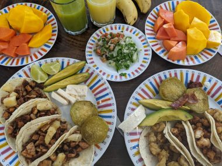
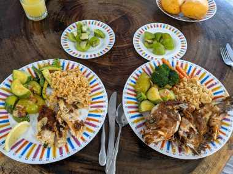
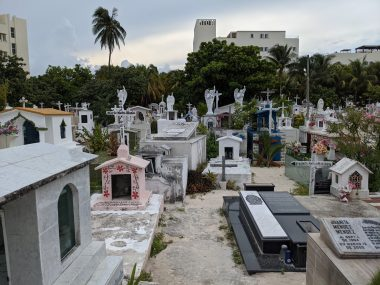
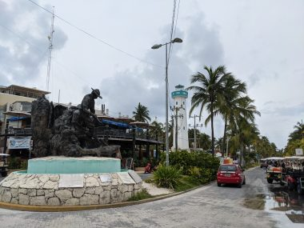
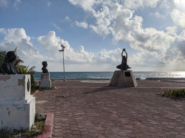
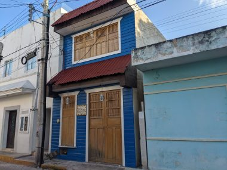

メキシコのイスラムヘレスでノマドワーク
トロントへの帰国はカンクンの空港からの予定なので、メキシコシティ―からカンクンへ飛行機で、カンクンからイスラムヘレスへはフェリーで移動した。
わざわざカンクンからイスラムヘレスへ移動したのは、海藻問題のせいだった。ビーチに押し寄せる海藻問題は観光に深刻な影響を及ぼしていた。それで調べたら、海藻問題の被害を被っていないのはイスラムヘレスの北側のビーチだということが決め手となった。
ホテルはメキシコでも屈指の美しさを誇るイスラムヘレスのビーチ、プラヤノルテから徒歩2分のところにあるHotel Paradise Suitesを選んだ。
部屋はキッチンがついていたので食事はテイクアウトしたタコスや魚、鳥の丸焼きなどとともに近所の常設市場で買った野菜を調理したり、果物を添えて部屋で食べた。


パパイヤやマンゴーの皮は敷地内に住み着くイグアナにあげると喜ばれた。
このホテルには隣の部屋との共同の屋外の洗濯もの干し場があって便利だった。強烈な日差しが濡れたビーチタオルや洗濯ものをすぐに乾かしてくれた。
ラバンドリアと呼ばれる洗濯屋さんも近所にあったが、メキシコシティ―のラバンドリアより時間がかかるのと料金が高いので、この干し場が重宝した。
とにかく日差しが強いので、日の出直後と日没の時間に合わせて毎日一日2回、海に入ることにした。
プラヤノルテのビーチは海藻被害もなく水温も高く水がきれいだったのだが、午後から日没にかけて観光客が大勢いて、船を貸し切りパーティーをするひとが流す大音量の音楽がうるさかった。早朝の日の出直後に訪れると誰もいないので泳ぐにはベストなタイミングと言える。日没には陽が沈むのをみることができる。
それに対して、隣接するヘルモサカレタビーチは幼児用プールのような遠浅がずっと続き、地元のひとが小さな子供を連れてきていた。岩場では熱帯魚の群れがみれて楽しかった。私たちは静かなこのビーチがお気に入りだった。
↓Hermosa Caleta ヘルモサカレタビーチ 美しい入り江という意味。
昼間は、強烈な日差し、高い湿度にあまり吹かない風、のためにホテルから数分のところに屋台に昼食にタコスを買いに行ってかえってくるだけで、Tシャツが汗でびっしょりに。それでも照り付ける太陽光線を避けるための黒い雨傘が役立った。
観光は、ホテルからの徒歩圏内を買い物など用事にでたついでに寄るのがやっと。
↓誰でも入れる公共墓地

↓カリブの海賊の墓


↓アーティストが住んでいた家。かわいらしい。

ジムがあったのもこのホテルを選んだ決めてだったが、設置されているエアコンを稼働させないため、直射日光が降り注ぐガラス張りの室内は超高温多湿状態で不快指数も高い。とても快適に運動できる状態とはいえないため、利用せずに終わった。
一週間ほどの滞在中、毎日一日2回海に入り、海水浴後はホテルの部屋のシャワーで海水を流すだけで、体や髪を洗うのに石鹸やシャンプーを使わず、肌にかかる負担が減ったのが心地よかった。
イスラムヘレスではWIFI環境も問題なく、暑い昼間はホテルのプールで木陰になっているところに腰をおろし、水に浸かりながら仕事したりして、J次郎にとっては最高のワーケーションとなった。